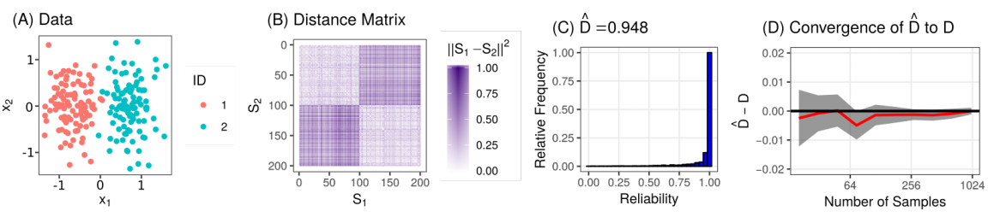
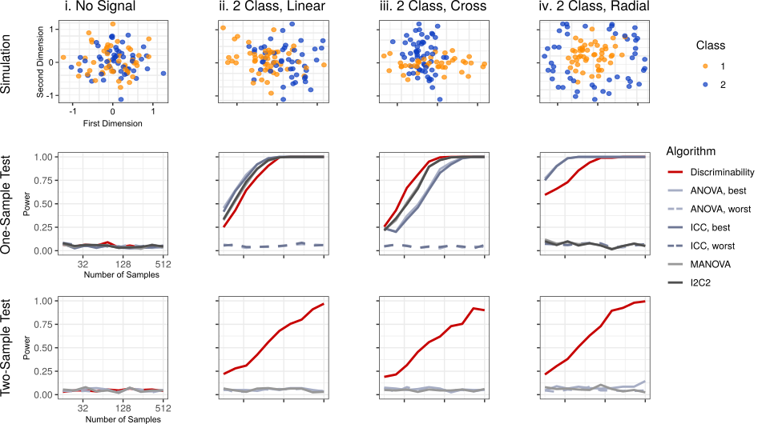
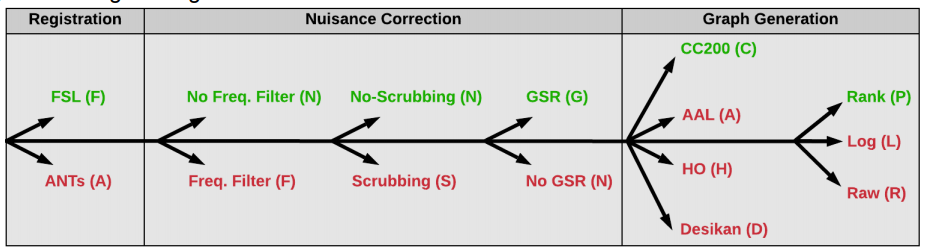

Optimal Decisions for Reference Pipelines and Data
Presented by Eric Bridgeford
Follow the slides: ericwb.me/lectures/lunch_presentations/discr.html
Why, and how, do we choose a good reference method?
What is a reference method?
- Reference method: an approach for collecting or preprocessing data for downstream inference
- Data Collection: what procedure do we use to collect raw data?
- Data Processing: how do we take the raw data, and produce a usable piece of data for external tasks?
- Downstream Inference: what do we really want to solve or learn about?
What are problems with current reference method evaluation?
- Most direct: Look directly at the output, and assess its correctness
- Less direct: look at the steps along the way, and assess how well they "look" like what we expect
- Problem: we don't know the ground truth, and both of these would require that
What can we do in the absence of a ground truth?
- If we are to trust downstream inference, it had better be repeatable
- If we are going to find anything interesting, new members of the population should be differentiable
What's out there?
- ICC: Intraclass Correlation Coefficient
- Proportion of variance explained by subject effect
- MANOVA: Multivariate ANOVA
- Assumptions of independence to use products of variance ratios
- I2C2: Image Intraclass Correlation Coefficient
- similar to MANOVA; better for HDLSS
- DISCO: Distance Components
- distribution of within-subject distances relative between-subject distances
How can we do it better?
Discriminability
- Assume: $x_{it} = v_{i} + \epsilon_{it}$, where $\epsilon_{it} \overset{iid}{\sim} f$, $t \in \left\{1, ..., s\right\}$
- $D = \mathbb{P}\left(\delta_{i,t,t'} < \delta_{i,i',t,t''}\right)$
- Make no assumptions about $f$
Why Sample Discriminability?
- Consistent, unbiased for discriminability with no rigorous distributional assumptions
- Flexible
- Intuitive: result is easy to interpret
- One and two-sample testing: goodness of fit and equality
- Bounds classification performance error
The Sample Discriminability Procedure
Comparisons to Existing Metrics
| ICC | I2C2 | MANOVA | Discr | |
|---|---|---|---|---|
| Multivariate | ✔ | ✔ | ✔ | |
| Scalable | ✔ | ✔ | ✔ | |
| Lax Assumptions | ✔ | |||
| One Sample Testing | ✔ | ✔ | ✔ | |
| Two Sample Testing | ✔ |
Discriminability Outperforms Existing Techniques Empirically
Is Discriminability Useful?
fMRI Connectomics Use-Case
- CoRR Dataset: $n=1600$ subjects, approx. $4000$ total scans
- Subject, Sex, and Age metadata for all$^*$ subjects
- Processed via 192 different processing pipelines
$^*$ most
Processing Options Attempted

Take Aways for Discriminability
- Intuitive and interpretable
- One and two-sample tests directly answer relevant inquiries for pipeline engineering
- Fast; flexible; scales well (parallelizable)
- Has an awesome codebase maintainer